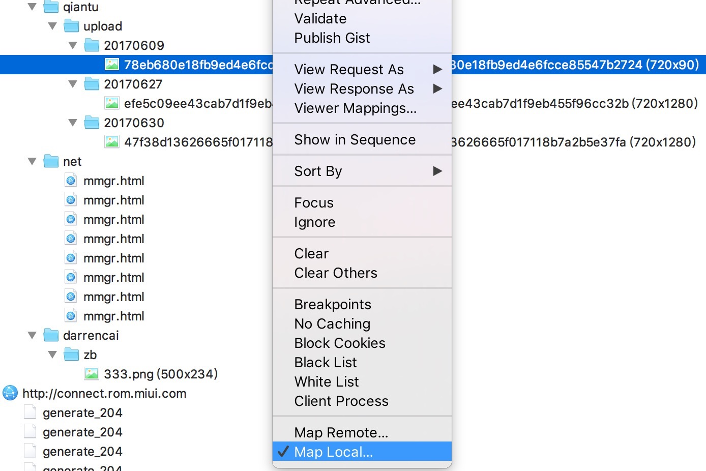
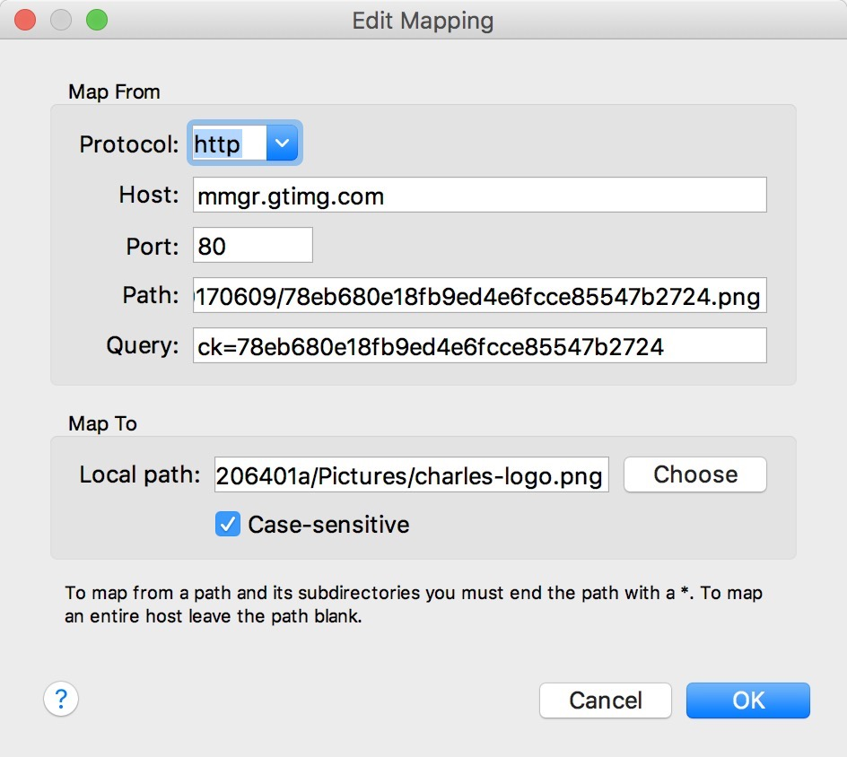
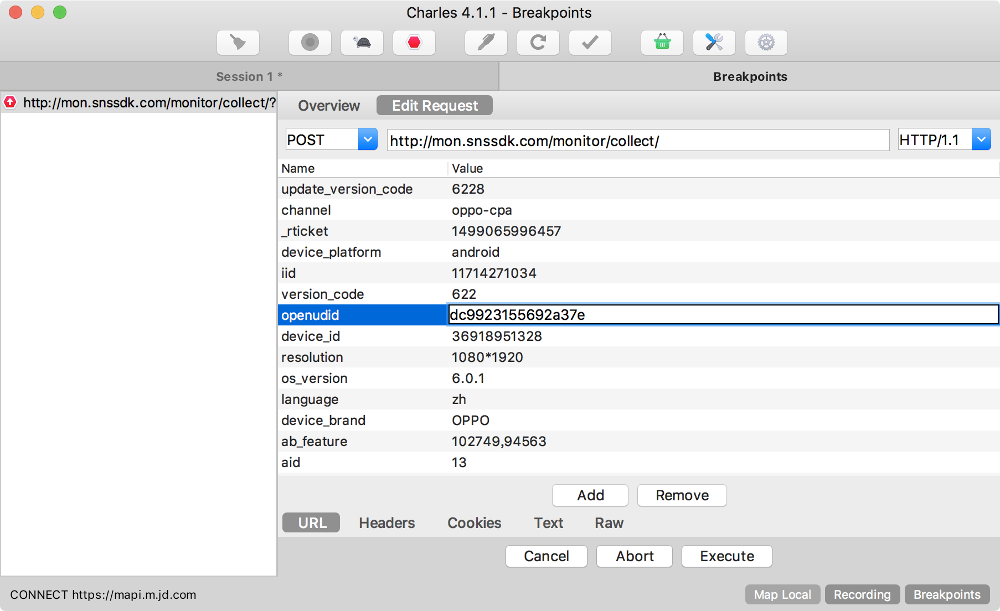
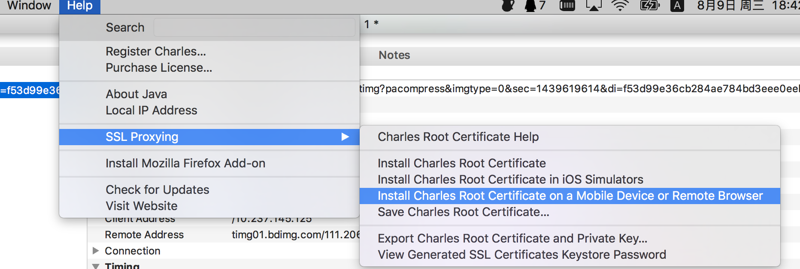
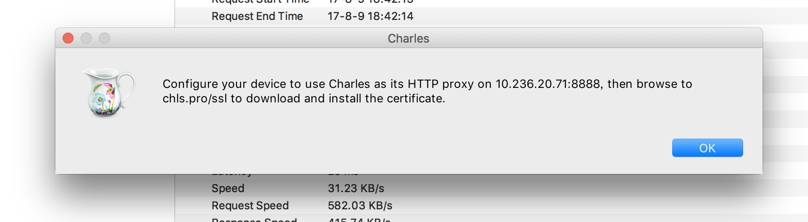
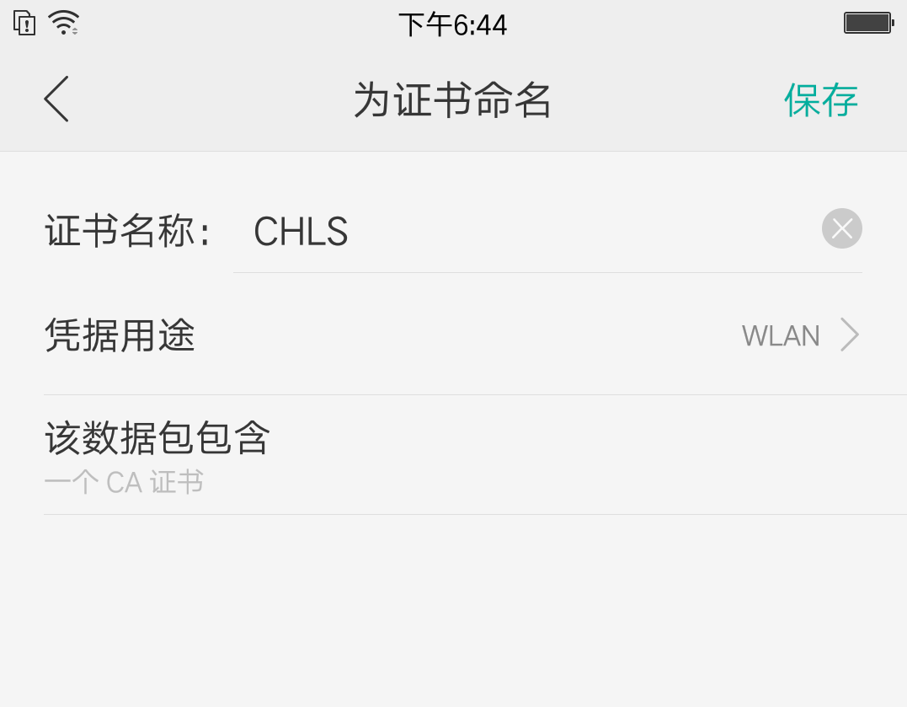
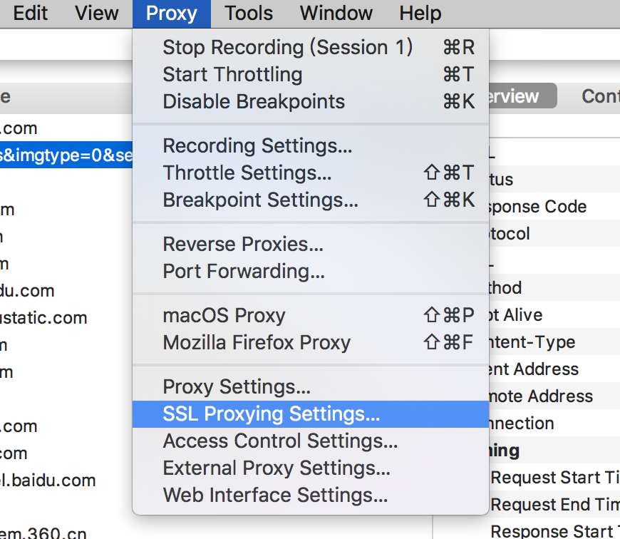
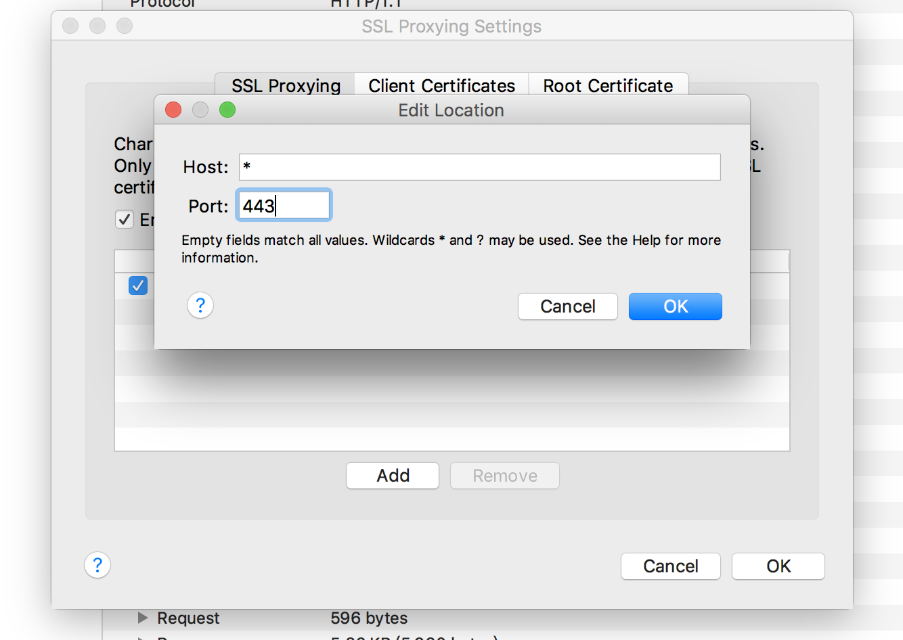
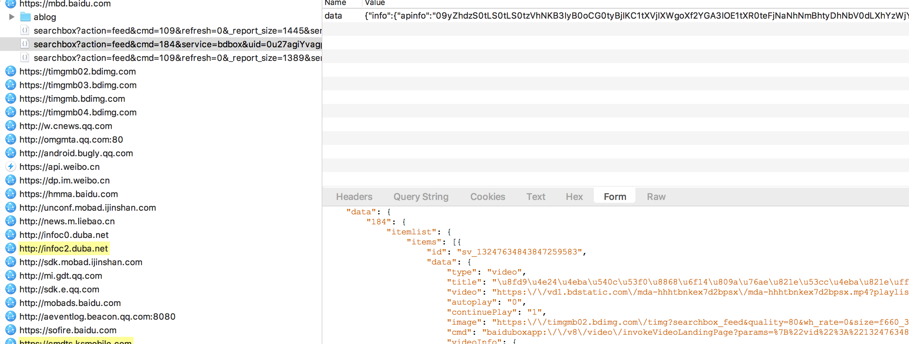
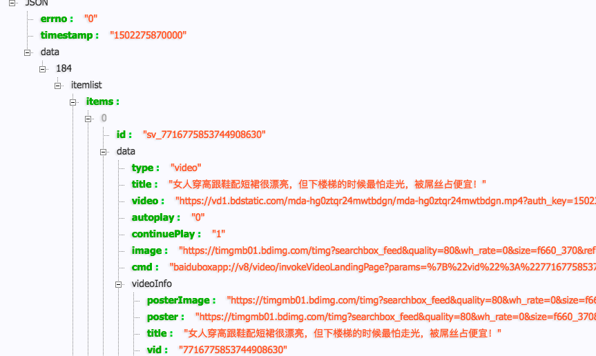

知识总结之 Charles抓包工具使用总结
Charles是一款HTTP/HTTPS协议流量包分析工具，适用于PC及各种移动设备。在使用过程中，有很多强大而方便的功能，总结下来，方便日后使用。

Charles抓包工具使用总结
Charles is an HTTP proxy / HTTP monitor / Reverse Proxy that enables a developer to view all of the HTTP and SSL / HTTPS traffic between their machine and the Internet. This includes requests, responses and the HTTP headers (which contain the cookies and caching information).
本文例子及场景主要来自移动设备上的数据包分析。
一、动态修改请求返回数据
为了不修改服务器端返回逻辑，不用修改移动软件中的数据请求逻辑，或者不用查看和分析业务代码，只要我们在Charles中找到目标请求接口，然后设置一些参数，这一切很方便的可以实现。
1.Map Local
本地映射，可以让请求数据直接取自己本地磁盘数据，本地数据自己可以动态修改，此方法灵活性强。
找到目标接口，然后右键，找到*Map local.


2.Map Remote
远程映射，可以动态将请求数据映射到别的接口上，同样的步骤，找到Map remote
3.BreakPoints
上面两种方法是修改映射的方法，BreakPoints断点方法可以像代码断点调试一样，连接指定请求，并且修改请求返回数据。
同样也是找到目标请求接口->右键->BreakPoints

点击Edit Request,即可修改目标参数。
修改完后，点击Execute，继续执行，返回到指定应用。
二、抓取https包
默认情况下，设置好代理地址，我们抓取到的包只能看到http的明文包，而对于https却是一堆乱码，下面以android手机为例，分析https的抓包方法。
HTTPS(Hyper Text Transfer Protocol Secure)，是一种基于SSL/TLS的HTTP.HTTPS协议是在HTTP协议的基础上，添加了SSL/TLS握手以及数据加密传输，也属于应用层协议。
1. 安装SSL证书到目标手机上
Help -> SSL Proxying -> Install Charles Root Certificate on a Mobile Device

弹窗提示，得到地址 chls.pro/ssl

用手机浏览器打开上面地址，然后安装证书

2.Charles设置Proxy

找到SSL proxy 勾选Enable SSL Proxying

添加要抓取的目标host地址及端口，如果抓取全部的可以用 * 代替。端口号默认都是 443
3.重新获取数据

这里抓取的是手机百度信息流的数据，可以看到数据已经抓取到，可以看到汉字还做了编码处理。我们用chrome插件看下json如下：

ios系统设置步骤雷同，只要在按照手机证书步骤正确安装即可。
…